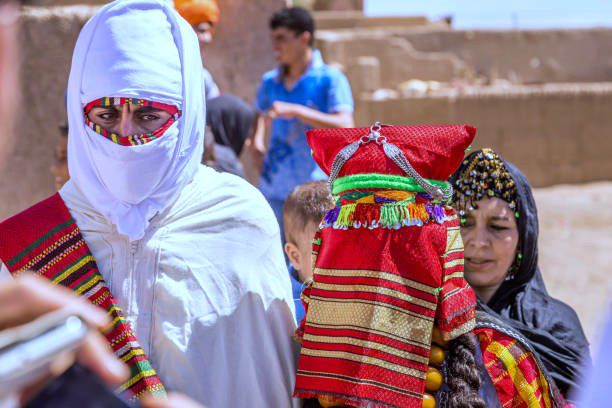

Bem-vindos a Marrocos!
Conheça seus pontos turisticos, comidas tipicas, historia e muito mais!

Marrocos, um país do Norte da África banhado pelo Oceano Atlântico e pelo Mar Mediterrâneo, distingue-se pelas influências das culturas berbere, árabe e europeia. A medina de Marrakesh, um bairro medieval labiríntico, oferece entretenimento na praça Djemaa el-Fna e nos souks (mercados), que vendem cerâmica, joias e lanternas de metal. O Casbá dos Udaias, na capital Rabat, é um forte real do século XII com vista para o mar.
Marrocos tem uma população de mais de 33,8 milhões de pessoas e uma área de 446 550 km2